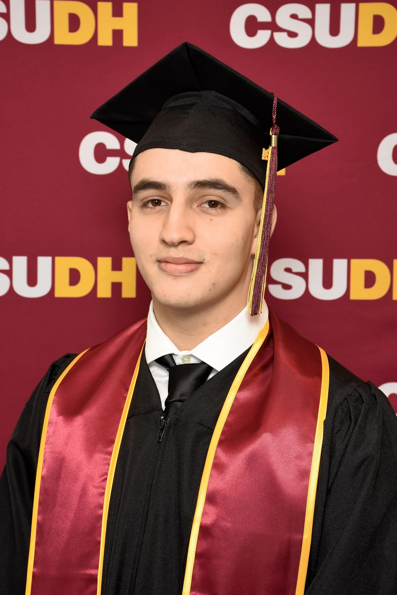

Introduction
Hello! My name is Fernando Romo. I am from Los Angeles County and I am a first-generation Hispanic college graduate and I am very passionate about programming! I have proficient skills in Java, Python, HTML/CSS, Javascript, and SQL.
Education
I am a recent graduate from California State University, Dominguez Hills with a Bachelor's of Science in Computer Science.
Work Experience
I have worked at theCoderSchool as a Code Coach for 2 months and my job is to work with kids from the age of 6-17, in group sessions whether there were 1:1 or 2:1, and introduced programming concepts to them utilizing Scratch and Python in order to enable them to create projects that interest them such as game development and mobile applications.
Hobbies
In my free time, I enjoy going out with friends and family, going to the gym, and photography in which I also have a page where I have some of my favorite photos I have taken!
Contact Information
Feel free to reach out to me at my personal email: faromo0214@gmail.com. Connect with me on my social media links down below!.

© 2024 by Fernando Romo